Backlog
Buffer
In progress
Done 
Bloqs is a productivity app that helps manage tasks using 4 blocks. New tasks are added to the backlog
and after moving tasks to the Done section the arrow can be used to delete them. Tasks are stored in
localStorage.
Made with ❤ by mirsha